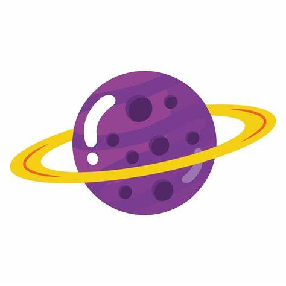
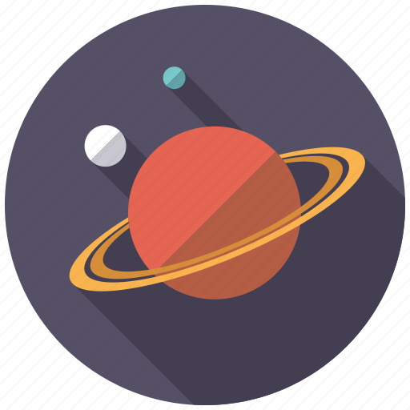
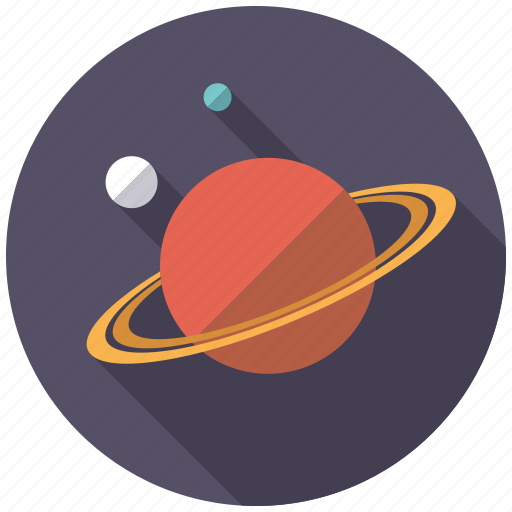
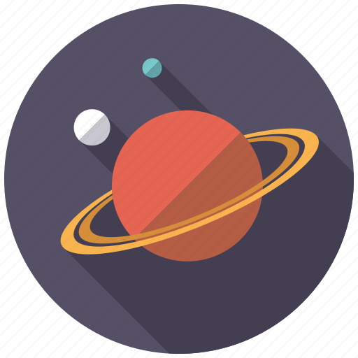

About Saturn
Saturn is the sixth planet from the Sun and the second-largest in the Solar System, after Jupiter. It is a gas giant with an average radius about nine times that of Earth. It is known for its distinctive ring system, which is made up of ice particles, dust, and rocks.
Key Features
- Ring System
- Atmosphere primarily composed of hydrogen and helium
- 67 Moons, including Titan, the second-largest moon in the Solar System
- Hexagonal cloud pattern at its north pole
Gallery

 

